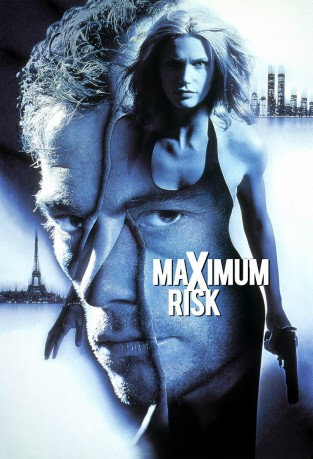
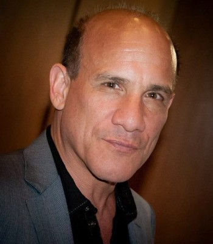
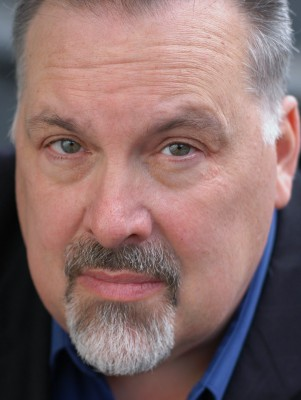
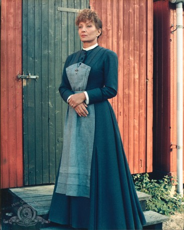
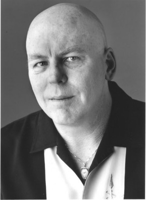
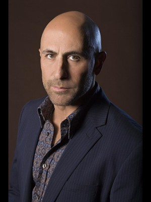
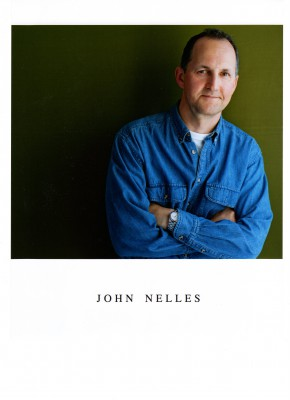

#3565 Maximum Risk
 
 IMDB-Wertung: 5.4 / 10
IMDB-Wertung: 5.4 / 10  Metascore: 0
Metascore: 0 
Als der Polizist Alain Moreau (Jean-Claude van Damme) einen Gangster zur Strecke bringt, staunt er nicht schlecht, als er plötzlich in sein eigenes, lebloses Gesicht blickt. Der Tote war sein verschollener Zwillingsbruder Mikhail Suverov, der für die Russenmafia arbeitete. Alain nimmt die Identität seines Bruders an, und ermittelt undercover gegen die Kriminellen, und trifft dabei schon bald auf Mikhails Freundin Alex (Natasha Henstridge)...
Jahr: 1996
Dauer: 100 Minuten
FSK: 18
Land: USA Studio: Columbia PicturesTonspuren: DTS - ,
Untertitel: Deutsch, Englisch,
Auflösung: 720p (1280x528) Größe: 4741 MB
Genre: Action, Thriller, Krimi, Liebe, Mystery
Regisseur:  Ringo Lam
Ringo Lam
Drehbuch: Gordan Mihic
Soundtrack:
Darsteller:
 Jean-Claude Van Damme als Alain Moreau / Mikhail Suverov
Jean-Claude Van Damme als Alain Moreau / Mikhail Suverov Natasha Henstridge als Alex
Natasha Henstridge als Alex Jean-Hugues Anglade als Sebastien
Jean-Hugues Anglade als Sebastien Zach Grenier als Ivan Dzasokhov
Zach Grenier als Ivan Dzasokhov-  Paul Ben-Victor als Agent Pellman
-  Frank Senger als Agent Loomis
-  Stéphane Audran als Chantal Moreau
-  Dan Moran als Yuri
- Donald Burda als Nicholas
- Herb Lovelle als Martin
-  Carlo Rota als Bohemia Bartender
 Joe Pingue als Bohemia Doormen
Joe Pingue als Bohemia Doormen- Hugh Thompson als Bohemia Doormen
- Gloria Slade als Airline Steward
- Kedar Brown als Tough Teen
-  John Nelles als Nervous Passenger
 Kevin Rushton als Guard
Kevin Rushton als Guard- Branko Racki als Vladimir
- Brian Jagersky als Tim
- Peter Messaline als Ari
- James Millington als FBI Boss
- George Kash als Man in Private Room
 Danny Lima als Guard #3
Danny Lima als Guard #3- Edward A. Queffelec als Bodyguard
- Brian Kaulback als Ivan's Bodyguard
 Stefanos Miltsakakis als Red Face
Stefanos Miltsakakis als Red Face- Frank Van Keeken als Davis Hartley
- David Hemblen als Dmitri Kirov
- Rob Kaman als Morris
- Denis Costanzo als Innkeeper
- Marc Estrada als Inspector
- Jackie Richardson als Large Woman
- Ed Sahely als Desk Clerk
- Martine Pujol als Cleaning Lady
- Albert Schultz als Anderson
- Dan Duran als Reporter
- Raymond Accolas als Bank Manager
- Claire Cellucci als Yuri's Girlfriend
- John Bayliss als Kirov's Butler
- Henry Gomez als Cab Driver
- Louise Naubert als Secretary
- Philip Wotton als Sebastien's Driver
- Jean-Pierre Galleri als Paris Police Detective
- Stephan Muller als Paris Fireman
- John Pearson als Guard Sergeant
- Sharon Bernbaum als Assistant Bank Manager
- David Christoffel als Bank Security Guard
- Kamel Krifa als Boris
- Irene Pauzer als Ronnie
- David Turner als Inspector #2
Datei: X:\FSK18-1900-1999\Maximum Risk (1996, FSK18, 1280x528).mkv seit 03.05.2016
Festplatte: FSK18
 Es gibt insgesamt 108 Filme in der Gruppe 'FSK18-1900-1999'
Es gibt insgesamt 108 Filme in der Gruppe 'FSK18-1900-1999'